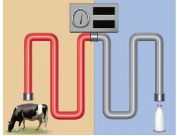
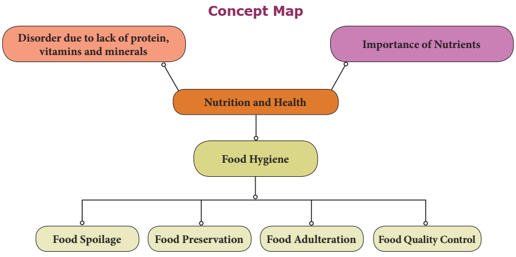

1. The nutrient required in trace amounts to accomplish various body functions is dash
A bracket closed carbohydrate b bracket closed protein c bracket closed vitamin d bracket closed fat
2. The physician who discovered that scurvy can be cured by ingestion of citrus fruits is dash
A bracket closed James Lind b bracket closed Louis Pasteur c bracket closed Charles Darwin d bracket closed Isaac Newton
3. The sprouting of onion and potatoes can be delayed by the process of dash
A bracket closed freezing b bracket closed irradiation c bracket closed salting d bracket closed canning
4. Food and Adulteration Act was enforced by Government of India in the year dash
A bracket closed 1964 b bracket closed 1954 c bracket closed 1950 d bracket closed 1963
5. An internal factor responsible for spoilage of food is dash
A bracket closed wax coating b bracket closed contaminated utensils
C bracket closed moisture content in food d bracket closed synthetic preservatives
2. The process of affecting the natural composition and the quality of food substance is known as dash
3. Vitamin D is called as dash vitamin as it can be synthesised by the body from the rays of sunlight.
4. Dehydration is based on the principle of removal of dash
5. Food should not be purchased beyond the date of dash
6.AGMARK is used to certify dash and dash products in India.
1. Iron is required for the proper functioning of thyroid gland.
2. Vitamins are required in large quantities for normal functioning of the body -
3. Vitamin C is a water soluble vitamin
4. Lack of adequate fats in diet may result in low body weight
5. ISI mark is mandatory to certify agricultural products.
Column A Column B
1. Calcium a. Muscular fatigue
2. Sodium b. Anaemia
3. Potassium c. Osteoporosis
4. Iron d. Goitre
5. Iodine
e. Muscular cramps
Vitamins |
Dietary Source |
Deficiency Disease |
calciferol |
BLANK |
Rickets |
BLANK |
Papaya |
Night blindness |
Ascorbic acid |
BLANK |
BLANK |
BLANK |
Whole grains |
Beriberi |
1. ISI dash
2. FPO dash
3. AGMARK dash
4. FCI dash
5. F S S A I dash
Direction: In the following question, a statement of a Assertion is given and a corresponding Reason is given just below it. Of the statements given below, mark the correct answer as:
a. If both Assertion and Reason are true and the Reason is the correct explanation of Assertion
b. If both Assertion and Reason are true but Reason is not the correct explanation of Assertion
c. If Assertion is true but Reason is false
d. If both Assertion and Reason is false
1. Assertion: Haemoglobin contains iron.
Reason: Iron deficiency leads to anaemia
2. Assertion: AGMARK is a quality control agency
Reason: ISI is a symbol of quality
a. Salt is added as a preservative in pickles dash
b. We should not eat food items beyond the expiry date dash
c. Deficiency of calcium in diet leads to poor skeletal growth dash
1. Differentiate
A bracket closed Kwashiorkar from Marasmus
B bracket closed Macronutrients from Micronutrients
2. Why salt is used as preservative in food question mark
3. What is an adulterant question mark
4. Name any two naturally occuring toxic substances in food.
5. What factors are required for the absorption of Vitamin D from the food by the body question mark
6. Write any one function of the following minerals
A bracket closed Calcium b bracket closed Sodium c bracket closed Iron d bracket closed Iodine
7. Explain any two methods of food preservation.
8. What are the effects of consuming adulterated food question mark
1. How are vitamins useful to us question mark Tabulate the sources, deficiency diseases and symptoms of fat soluble vitamins
2. Explain the role of food control agencies in India.
Image was given below

A bracket closed Name the process involved in the given picture.
B bracket closed Which diary food is preserved by this process question mark
C bracket closed What is the temperature required for the above process question mark
2. The doctor advices an adolescent girl who is suffering from anaemia to include more of leafy vegetables and dates in her diet. Why so
3. Sanjana wants to buy a jam bottle in a grocery shop. What are the things she should observe on the label before purchasing it question mark
1. Swaminathan M 1995: “Food and Nutrition”, The Bangalore Printing and publishing co ltd., Vol 1, Second Edition, Bangalore.
2. Srilakshmi 1997: “Food Science”, New Age International Bracket OPEN P bracket closed Ltd, Publishers, Pune.
3. Mudambi .R. Sumathi and Rajagpal M.V 1983, “Foods and Nutrition”, Willey Eastern Limited Second Edition, New Delhi.
4. Shubhangini A. Joshi, 1992 “Nutrition and Dietetics” Tata Mc Grow- Hill publishing Company Limited, New Delhi.
5. Srilakshmi. B – “Nutrition Science”, V Edn, New Age International Bracket OPENPbracket closed Limited Publishers, Chennai
6. Thangam.E.Philip 1965: Modern Cookery, Orient Longman, 2 edition. Vol 2, Bombay.
http://en.wikipedia.org is greater than wiki is greater than food preservation
https://en.m.wikipedia.org/wiki/louispasteur
www.fao.org is greater than fao-who-codexalimentarius
Concept map

ICT CORNER Deficiency Diseases
Steps
1. Type the following URL in the browser or scan the QR code from your mobile.
2. A home of ICMR opens, Select Nutri Guide you can find various nutrients like Vitamins, Minerals Proteins.
3. Now Click on the Vitamins and you can find different types of Vitamins.
4. Click on any Vitamins button and a new screen will open with Vitamin chart with Biochemical, RDA, Dietary Sources Signs and Symptoms.
URL: http://218.248.6.39/nutritionatlas/home.php